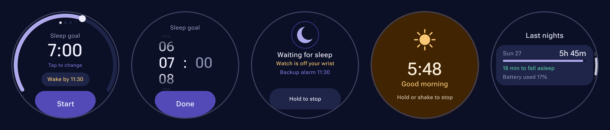
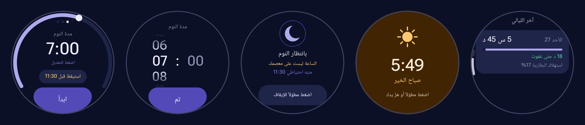

The alarm that starts counting when you fall asleep المنبّه الذي يبدأ العدّ عندما تغفو
Ask for 7 hours of sleep, get 7 hours of sleep. DreamPulse reads your heart rate and movement, waits until you are really asleep, and only then starts the countdown. اطلب 7 ساعات نوم، واحصل على 7 ساعات نوم. يقرأ DreamPulse نبض قلبك وحركتك، وينتظر حتى تغفو فعلاً، وعندها فقط يبدأ العدّ.


Why an ordinary alarm shortens your nightلماذا ينقص المنبّه العادي من نومك
Every alarm starts counting the moment you set it, so the time it takes you to fall asleep comes out of your sleep.كل منبّه يبدأ العدّ لحظة ضبطه، فالوقت الذي تحتاجه لتغفو يُقتطع من نومك.
Ordinary alarm, 8 hoursمنبّه عادي، 8 ساعات
40 minutes to fall asleep, 7 h 20 of actual sleep.40 دقيقة حتى تغفو، و7 ساعات و20 دقيقة نوم فعلي.
DreamPulse, 8 hoursDreamPulse، 8 ساعات
The countdown starts once you are asleep: a full 8 hours of sleep.يبدأ العدّ بعد أن تغفو: 8 ساعات نوم كاملة.
Everything a night needsكل ما تحتاجه ليلتك
Made for the watch: big targets, dim night colours, and nothing that fails silently.مصمّم للساعة: عناصر كبيرة، وألوان ليلية هادئة، ولا شيء يفشل بصمت.
Sleep-onset countdownالعدّ من لحظة الغفوة
Heart rate and stillness tell when you fell asleep; the alarm is set from there.النبض والسكون يحدّدان متى غفوت، ومن هناك يُضبط المنبّه.
Backup alarmمنبّه احتياطي
Set the moment you press Start, so you wake up even if sleep is never detected.يُضبط لحظة الضغط على ابدأ، فتستيقظ حتى لو لم يُكتشف النوم.
Wake-by timeموعد استيقاظ إجباري
A hard limit, like "never after 07:00", whatever time you fell asleep.حدّ أقصى مثل "ليس بعد السابعة"، مهما تأخرت في النوم.
Smart Wakeاستيقاظ ذكي
In the last 15 minutes, a real turn-over in light sleep rings the alarm early. A twitch does not.في آخر ربع ساعة، التقلّب في النوم الخفيف يوقظك مبكراً. الرعشة الواحدة لا.
Sunrise alarmمنبّه الشروق
The screen warms up like dawn. Hold anywhere, or shake your wrist, to stop.تضيء الشاشة تدريجياً كالفجر. اضغط مطوّلاً أو هزّ يدك للإيقاف.
Morning summary and historyملخّص الصباح والسجل
Time slept, time to fall asleep, battery used. Last 7 nights on the watch.مدة النوم، والوقت حتى غفوت، واستهلاك البطارية. آخر 7 ليالٍ على الساعة.
Tile and watch-face chipTile وأيقونة على وجه الساعة
Start from a Tile; a moon on the watch face while a session runs.ابدأ من الـ Tile، ويظهر قمر على وجه الساعة أثناء الجلسة.
English, Arabic, Turkishالإنجليزية والعربية والتركية
Full right-to-left layout in Arabic, with an in-app language picker.واجهة كاملة من اليمين لليسار بالعربية، مع اختيار اللغة من داخل التطبيق.
How it knows you are asleepكيف يعرف أنك نمت
No guesswork from a single signal: movement, heart rate and the watch's own sleep state have to agree.لا يعتمد على إشارة واحدة: الحركة ونبض القلب وحالة النوم من الساعة يجب أن تتّفق.
- A baseline while you are awakeنبضك وأنت مستيقظThe first heart-rate reading after you press Start.أول قراءة للنبض بعد الضغط على ابدأ.
- Stillness, only while wornالسكون، والساعة على معصمكA watch left on a table never counts as asleep.الساعة الموضوعة على الطاولة لا تُحسب نائمة أبداً.
- A falling heart rateنبض ينخفض10 still minutes with a 15% drop, or 15 minutes with 5%. The watch's own sleep signal is accepted once stillness confirms it.10 دقائق سكون مع انخفاض 15%، أو 15 دقيقة مع 5%. وتُقبل إشارة النوم من الساعة عندما يؤكّدها السكون.
- The right onset timeوقت الغفوة الصحيحHalfway between your last movement and the first low heart-rate reading, not the moment the rule fired.في منتصف المسافة بين آخر حركة وأول قراءة نبض منخفضة، وليس لحظة التأكّد.
On a recorded test night, DreamPulse puts sleep onset at 04:54, the same minute Samsung Health reported.في ليلة اختبار مسجّلة، حدّد DreamPulse وقت الغفوة 04:54، الدقيقة نفسها التي سجّلها Samsung Health.
Every screenكل الشاشات
Screenshots from a Galaxy Watch8.لقطات من ساعة Galaxy Watch8.
No internet permission. Your nights stay on your wrist.بدون إذن إنترنت. لياليك تبقى على معصمك.
Heart rate, movement and sleep history are read and kept on the watch only, never uploaded.النبض والحركة وسجل النوم تُقرأ وتُحفظ على الساعة فقط، ولا تُرفع إلى أي مكان.